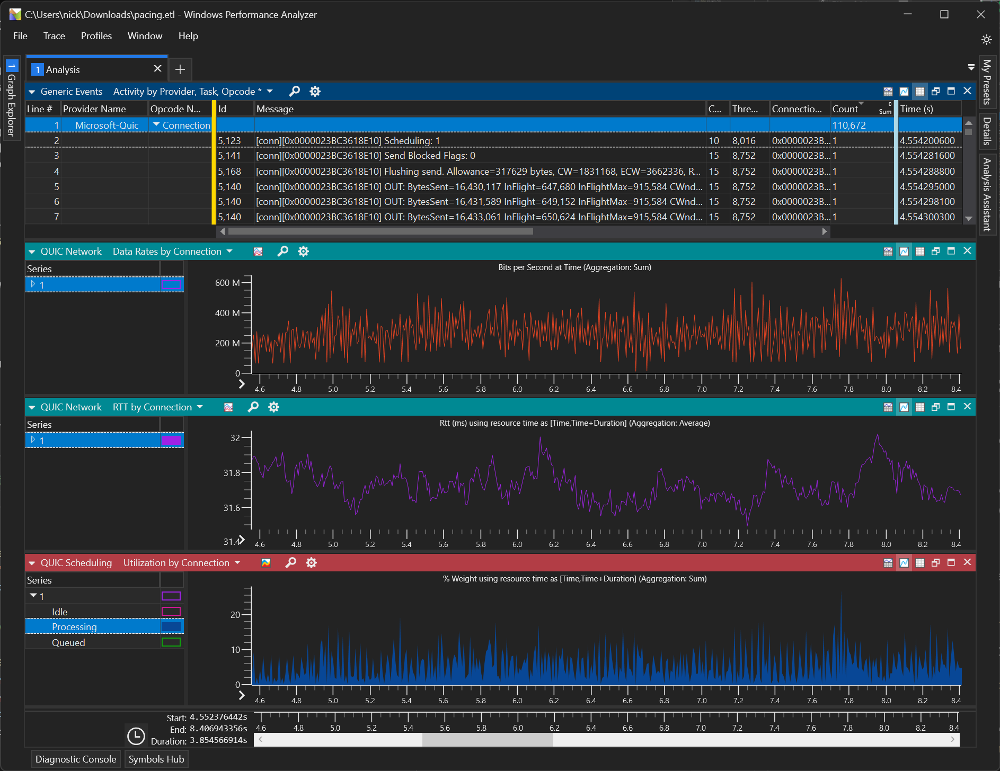
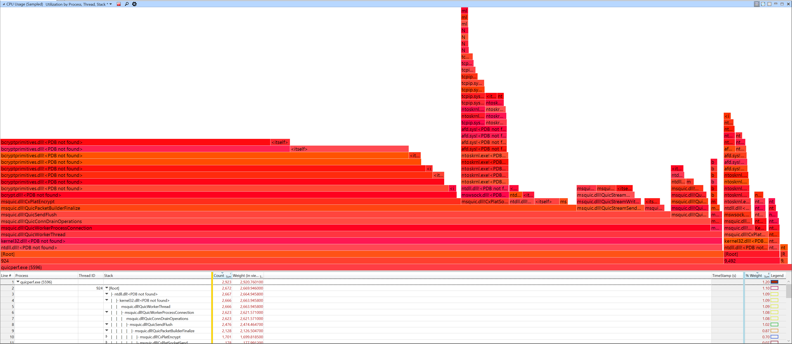
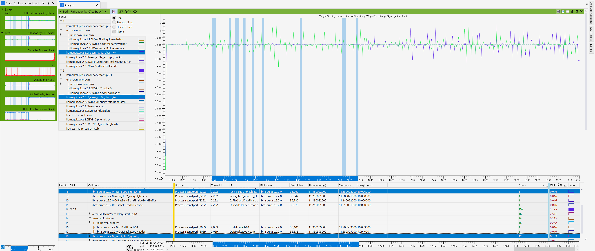
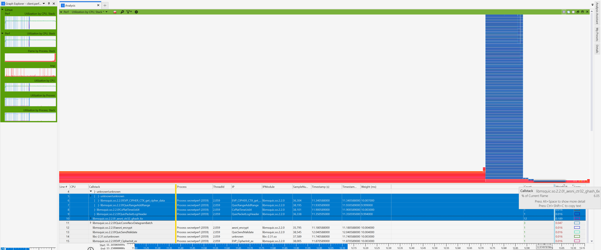

Windows Performance Analyzer Plugin

This page provides the install, setup and usage instructions for Windows Performance Analyzer (WPA) and use it to analyze MsQuic traces.
Install Instructions
The following are currently only possible on Windows. Other platforms may be supported by WPA in the future.
Install WPA
Download the preview version from the Windows Store or (for MSFT internal) from http://aka.ms/getwpa.
Download MsQuic WPA Plugin
- Navigate to our GitHub Action for building the plugin.
- Click on the latest build.
- Scroll to the bottom and download the
ptix_quictrace_Releaseartifact. - Extract the
.ptixfile.
Install the Plugin
- Open WPA and use the
Install Plugindialog to install the MsQuic WPA plugin. - Restart WPA.
Usage Instructions
WPA is extremely powerful. It can operate very quickly on multi-gigabyte trace files and let you slice & dice the data many different ways to really drill down into what's going on.
Load trace file
ETW trace
Select and Open .etl file
LTTng trace
- Directory
- Select directory which includes traces. WPA automatically traverses and find trace files.
- File
- Compress the directory as zip
- change the extension to .ctf
- Select the .ctf file
Call stacks and CPU Usage
Windows

One of the built-in capabilities of WPA is the ability to analyze CPU trace information to see the CPU usage of the various call stacks in the code. For instance, in the above Flame Graph you can easily see that the most expensive function (58% of total CPU usage!) is CxPlatEncrypt.
Linux
Linux perf command is one of the way to collect such information.
# on Linux (kernel > 5.10)
sudo apt-get install -y linux-perf
# on Linux (kernel <= 5.10)
sudo apt-get install -y linux-tools-`uname -r`
# use your own options
perf record -a -g -F 10 -o out.perf.data
# ".perf.data.txt" extension is required for later visualize on WPA
perf script -i out.perf.data > out.perf.data.txt
Visualize perf artifact on WPA
The perf command's artifact can be visualized on Windows through WPA.
Follow steps below to load perf extension on WPA.
# on Windows
cd ${WORKDIR}
git clone https://github.com/microsoft/Microsoft-Performance-Tools-Linux-Android
cd .\Microsoft-Performance-Tools-Linux-Android\PerfDataExtensions
dotnet build
# use absolute path
wpa.exe -addsearchdir ${WORKDIR}\Microsoft-Performance-Tools-Linux-Android\PerfDataExtensions\bin\Debug\netstandard2.1\
# Open out.perf.data.txt on WPA. You might need to open multiple time if you see error at opening (known issue?)
Change visualization type by drop down menu as shown in image below. Also you can filter in data for each CPU etc.  
TODO - Add more details/instructions.
QUIC Charts and Tables

TODO